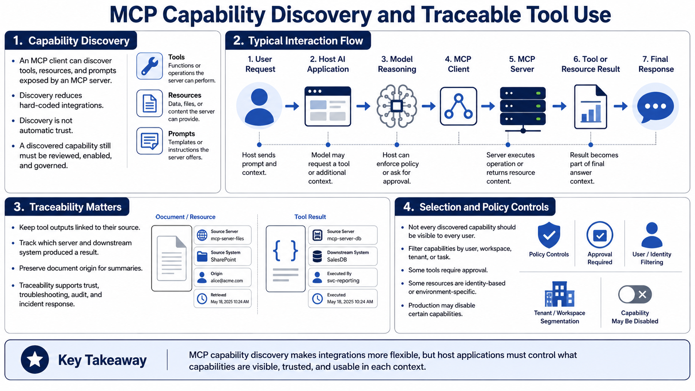

Discovery, Context, and Interaction Flow
Connecting to LMS... Progress: in progress

Narration
Capability discovery is the process by which an MCP client learns what a server offers. At a high level, the client can discover available tools, resources, or prompts and make those capabilities available to the host application. Discovery helps avoid hard-coding every integration into the AI application. It also creates a governance question: learning that a capability exists does not mean the capability should be trusted, enabled, or used in every context.
A typical interaction flow starts with a user request. The AI application sends the relevant prompt and context to the model. The model may reason over the request and decide that additional context or a tool call would help. The host may present available capabilities, enforce policy, ask for user approval, or call a tool through the MCP client. The server executes the requested operation or returns resource content. The tool result then becomes part of the context for the final response.
Traceability matters throughout that flow. Context and tool results should remain connected to their source so users and operators can tell where information came from. If a model summarizes a document, the application should know which document was used. If a tool returned a status, the application should know which server and downstream system produced it. Traceability supports user trust, troubleshooting, auditing, and incident response.
Discovery should be paired with selection rules. A server may expose many capabilities, but a given user, workspace, tenant, or task should only see the capabilities that policy allows. Some tools may require approval. Some resources may be filtered by user identity. Some capabilities may be disabled in production. MCP gives teams a structured interaction model, but the host application still needs to decide what context and actions are appropriate for the current request.